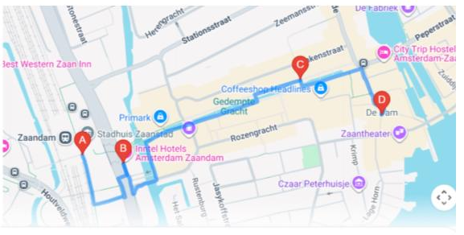

Cómo llegar:
Desde la estación central de Ámsterdam tomar tren hasta la
Estación Zaandam.
Estación Zaandam: al salir te encontrarás de inmediato con el sorprendente
estilo arquitectónico Zaans. La estación, el Ayuntamiento y los edificios
están diseñados como casas tradicionales verdes apiladas, estilo Lego.
Inntel Hotel y plaza moderna: a solo 2 minutos de la estación.
Es el punto más fotografiado de Zaandam. El hotel combina casi 70 fachadas
de casas tradicionales apiladas en una estructura icónica.
Gedempte Gracht: principal calle peatonal y comercial.
• Canal rodeado de arquitectura Zaans y puentes.
• Ideal para compras, cafeterías y disfrutar del paseo.
Dam Square (Plaza Dam) y Monumento al Zar Pedro:
centro histórico de Zaandam.
• Estatua de Pedro el Grande, quien visitó Zaandam en 1697.
• Orilla del Río Zaan, con vistas al puente y la esclusa
Wilhelminasluis, ideal para una pausa gastronómica.

Compras
Calle Damrak: Primark
Calle Nieuwendijk: Zara
Kalverstraat: calle comercial principal
Fábrica de Chocolate Tony’s
Oudebrugsteeg 15 (a la vuelta del hotel)
Old Amsterdam Store:
tienda para probar todo tipo de quesos (a 3’ del hotel)